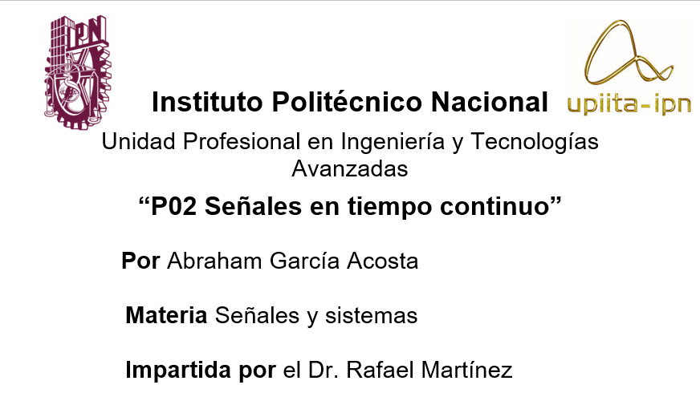
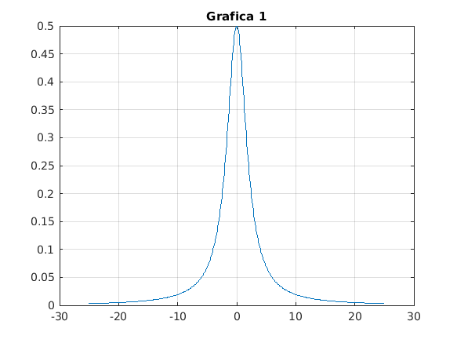
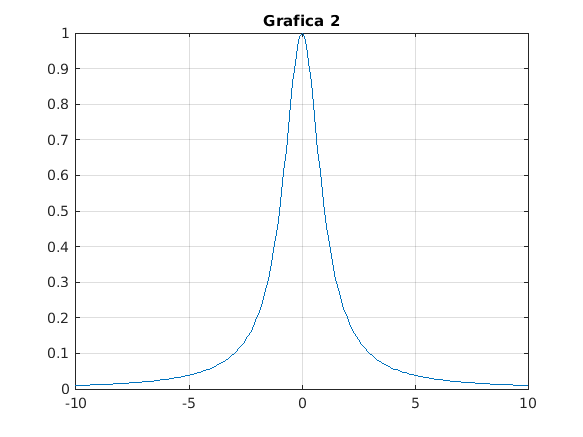
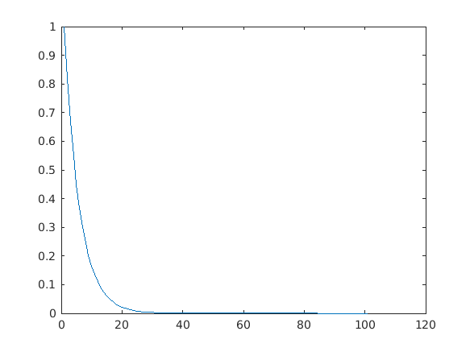

Contents
Objetivos
- Manipulación básica de MATLAB
- Gráficas de señales reales y complejas continuas
- Transformación de señales continuas (escalamientos y traslaciones)
- Cálculo de energía y potencia de señales continua
Introducción
Este entonrno informtatico empezó por tes hombres,JH Wikinson, George Forsythe y John Todd hace ya más de 60 años. Fue despues de muchos estudios de los autores, problemas, investigaciones y conferencias que a finales de 1970 crean la primera versión de MATLAB. Para esta versión se utlizó Fortran ademas que solamente se contaba con 80 funciones y mucho menos pensar en todas las herramientas con las que contamos hoy en día. Sí tu como usuario querías una función adicional a las que contaba el programa se debia modificar el código fuente de Fortran y compilar todo el programa.
Es curioso que los autores presentaron su softeare en un grupo de Standford en el cual se encontraban informáticos, matemáticos e ingenieros y los más sorprendidos fueron los ingenieros, los cuales vieron en MATLAB una herramienta en la cual apoyarse.
Hoy en día existe un gran número de software que nos sirve para realizar gráfias, operaciones y un sin fin de actividades. Una alternativa a MATLAB es Octave, el cual es una alternativa de softeare libre parecida a MATLAB. Octave cuenta con una sintaxis similar a MATLAB, aqí tambien se pueden ejecutar scripts ademas qur soporta parte de las funciones de la librería estándar del lenguaje C. Aquí proporciono un enlace si se quiere profundizar en el tema Octave. Otra opción puede ser Python. Python es un lenguaje de programación que ha tenido una popularidad que ha ido aumentando a lo largo de los ultimos años pues es multiplataforma, es un lenguaje poco tipado, lo que significa que no tiene una sintaxis estricta como puede ser la que tiene lenguajes como Java o c++. Este lenguaje actualmente se está utilizando fuertemente en ciencia de los datos e inteligencia artificial, entra muchas otras cosas. Python
Ejercicio 1
1. Crea una función que se llame fun1 y reciba dos parametros y la función debe regresar la evaluación f(ω) = a^2/(a^2+ω^2), esta función debe trabajar con a ∈ R y ω ∈ R^n .
clear; close all; a = 2; b = -25:0.1:25; f = fun1(a,b); plot(b,f); title("Grafica 1"); origen= gca; origen.XAxisLocation; origen.YAxisLocation; grid on;
Ejercicio 2
2. Construya una función que grafique funciones de R → R en el formato de su elección y pruebe su código mostrando la gráfica de f(ω) vs ω en el intervalo [-2,2] para a=1.
g = -10:0.1:10; v = fun2(g); plot(g,v); title("Grafica 2"); origen= gca; origen.XAxisLocation; origen.YAxisLocation; grid on;
Ejercicio 3
clear; close all; % Construya una función que gráfique funciones de R → R^2 en el formato de su elección y pruebe su código mostrando la gráfica de la transformada % de Fourier f(ω) en [-10,10] de la función $f(t) = e^-2t*u(t)$ , puede utilizar una función anonima para este fin, no debe incluir el código, solo el uso de la función para % mostrarla gráfica. Reporte la gráfica de $f(t)$ de [-1,5] (recuerde que ya tiene una función para esto). Reporte del espectro de magnitud y del % espectro de fase en [-10,10] (puedes con sultar con help la descripción de abs, angle, atan2). Solo reporte las graficas. fun3();
funciones
por problemas con las funciones tuve que poner todas las funciones al final del trabajo pero las dejo con numero
function f=fun1(a,b) f= a./(a^2+b.^2); end function f=fun2(b) f= 1./(1^2+b.^2); end function fun3() x = 0:0.1:10; y = exp(-x*2); plot(y); end
Referencias
Todas la refencias fueron del sitio oficial de MATLAB * Exponenciales * Graficas * imagenes